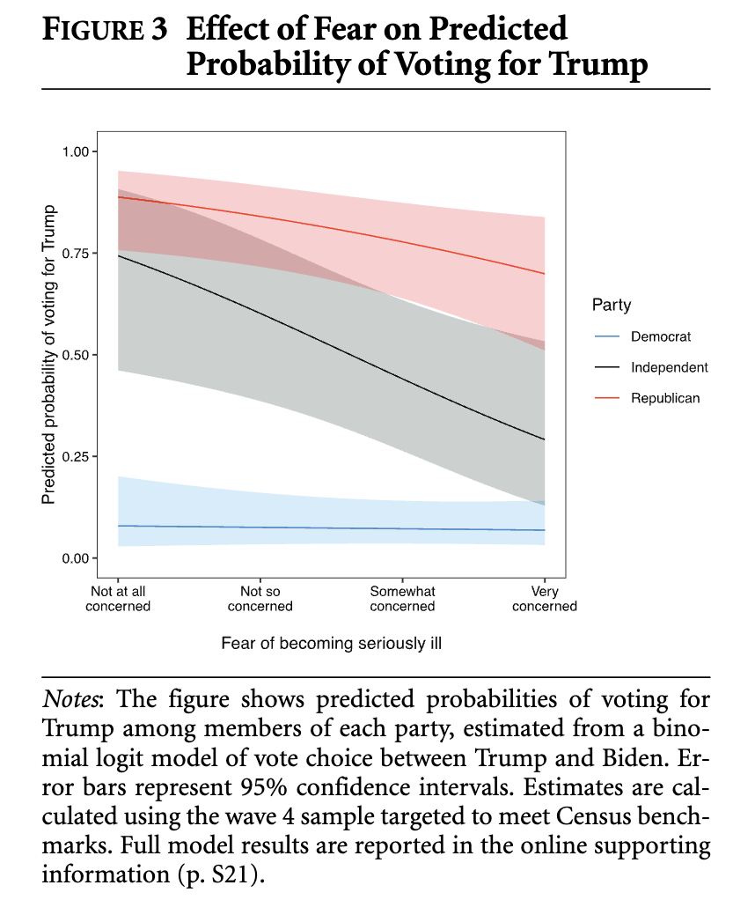
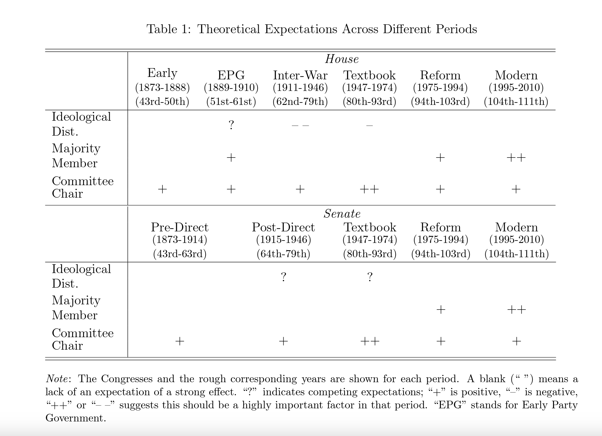
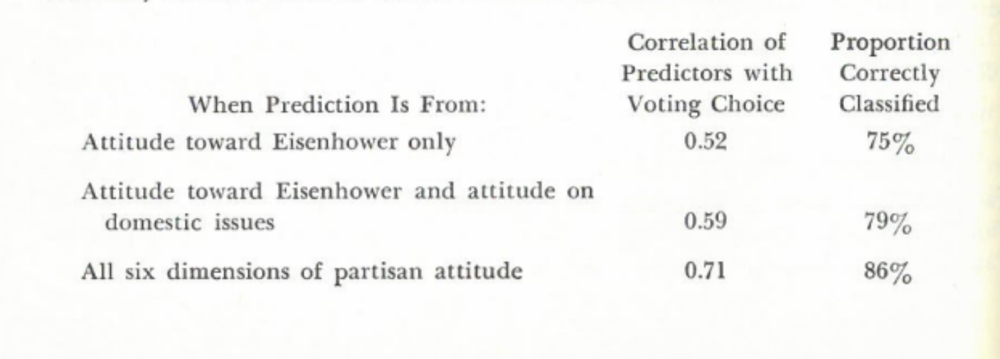

American Politics Core
![]()
Week 1 - Introductions
It is important to develop our own instincts about what is good and what is not good work in the field.
Field is generally divided by behavior and institutions.
behavior is really about mass behavior and how people act.
Institutions is behavior of elites and actual politicians.
Sometimes you have other areas of research that kind of link between.
Behavior -> institutions -> linkages -> other topics.
Assignments:
Response papers - 5 of them - any week.
1) identify over arching question of the week. What is big picture question?
2) identify favorite and least favorite reading for week.
- justify it.
Propose research for a week.
Pick weeks that are closer to your heart.
Pitch to Josh a research design that adds to the literature.
Week 2 - Recent Research in the Subfield
In-Class Notes:
All articles seem to reference polarization.
These all seem to be “headline” articles.
lots of survey data.
More authors is the trend.
Fowler:
Is congress polarizing because the public is polarizing? Or is it other things?
Fowler asks about policy preferences.
Good papers establish topline relationship
- can we establish the mechanism holds?
Fowler, Anthony, et al. 2023. “Moderates,” American Political Science Review.
Abstract:
Moderates are often overlooked in contemporary research on American voters. Many scholars who have examined moderates argue that these individuals are only classified as such due to a lack of political sophistication or conflicted views across issues. We develop a method to distinguish three ways an individual might be classified as moderate: having genuinely moderate views across issues, being inattentive to politics or political surveys, or holding views poorly summarized by a single liberal–conservative dimension. We find that a single ideological dimension accurately describes most, but not all, Americans’ policy views. Using the classifications from our model, we demonstrate that moderates and those whose views are not well explained by a single dimension are especially consequential for electoral selection and accountability. These results suggest a need for renewed attention to the middle of the American political spectrum.
Bumper Sticker:
Moderates need to be classified better and deserve more focus
Research Question:
How can we better identify moderates?
Why (from a survey perspective) are people moderate?
Background:
We typically think of moderates in the following:
politically unsophisticated
uninformed
politically incoherent
secretly partisan
ideologically cross pressured
extreme, with patterns of attitudes poorly by a single ideological dimension
There are obvious survey issues in trying to figure out if someone is a moderate.
Method:
Sort classically identified moderates into three subgroups of moderate type:
those who have genuinely centrist views that are well summarized by a single underlying ideological dimension (spatial)
- Downsian voters
- live in single dimension.
- \(Pr(y=1) = F(\beta_j(x_i-\alpha_j)\)
- \(x_i\) is the ideological position
- \(\alpha_j\) is issue
- Downsian voters
those who are inattentive to politics or the survey (unsophisticated)
random/incoherent views. The way in which they select answers has no coherence and basically makes no sense.
- special stats here but basically if they are showing to have a .5 probability for selecting either survey response question - that is essentially random and they are probably an inattentive voter.
those who hold genuine views that are not well summarized by a single ideological dimension (someone whose preferences are neither unsophisticated nor well summarized by the spatial model and, second, an ideology score on the liberal–conservative dimension were the respondent to be a spatial type (#1 above).)
Conversian respondents (named after Philip Converse)
genuine position holders but not well described in a left-right orientation.
voters that care about specific stuff -> which might translate into a lack of a wide-ranging belief system.
They discriminate between thus if \(\neq\) .5 relative likelihood then they are probably a conversian moderate.
issue by issue responses not correlated with each other. Less than .5
not completely guessing but no complete structure.
no clear structure.
Assumes responses are perfect representations of preferences
The issues have been ordered such that if a Downsian gives a conservative answer on issue one, he or she will necessarily give a conservative answer on issues two and three, and so on such that the three questions divide Downsians at three points along the ideological spectrum.
Questions are also ordered by popularity.
this ordering and assumptions allows them to figure out who is a “downsian” voter
- if they conflict with the Guttman scale - that is probably not a downsian voter.
Data:
Cooperative Congressional Election Study (CCES)
All CCES survey data from 2012 - 2018
280k respondents
Also use another CCES Model
2010
asked 133 policy questions to 1,300 people.
if the question was ordered they turned it into a binary scale.
- they wanted all questions to be binary.
Findings:
Moderates are more attentive to elections (than liberals and conservatives)
more responsive to incumbency
more responsive to candidate experience
more responsive to ideologies
Most moderates appear to be Downsian
results suggest centrist voters drive the relative success of incumbents, centrists, and experienced candidates.
Find 6.5% of CCES respondents are inattentive
This is a bit weird to me… Not sure how to say it. THIS IS SURVEY RESPONDENTS!
this seems to conflict with the general idea in the american voter that most voters are inattentive.
Someone that chooses to fill out a survey is probably less likely to be an inattentive voter.
Mehlhaff, Isaac, et al. 2024. “Where Motivated Reasoning Withers and Looms Large: Fear and Partisan Reactions to the COVID-19 Pandemic,” American Journal of Political Science.
Abstract:
Contemporary American politics has been largely characterized by hyper partisanship and polarization, with partisan-motivated reasoning a thematic concern. Theories of emotions in politics suggest that anxiety might interrupt partisan heuristics and encourage citizens to reason more evenhandedly—but in what domains and to what extent? We use original panel data to assess how anxiety about becoming seriously ill from COVID-19 interacted with partisan attachments to shape political judgment during the COVID-19 pandemic. The structure of our data allows us to assess large-scale implications of politically relevant emotions in ways that so far have not been possible. We find large effects on policy attitudes: Republicans who were afraid of getting sick rejected signals from copartisan leaders by supporting mask mandates and the like. Effects on vote choice for Republicans were muted in comparison, but fear’s large effect on independents may have been pivotal.
Bumper Sticker:
Fear and anxiety can influence partisanship (a little)
Research Question:
Why, then, did so many Republicans prefer policies starkly different from those suggested by their leaders but so few vote against those leaders?
How did the anxiety of COVID-19 influence partisan politics?
Background:
Partisanship influences how people see, act, and listen.
Anxiety can influence both information gathering and information processing.
The COVID-19 pandemic presented an unprecedented opportunity to test the posited link between anxiety and interruption of partisan habits.
Partisans typically listen to party elites.
- but for many republicans during Covid-19, they disagreed with the party elites.
Accuracy Driven Reasoning: a processing style in which people exert more effort to reach correct conclusions. They “attend to relevant information more carefully,” “process it more deeply,” and “[consider] more alternatives”
Hypothesis:
Fearful individuals will be more supportive of pandemic mitigation policies such as mask mandates.
Fearful individuals’ accuracy motivations to be visible in the information they consult
- they should seek more information, including from sources they do not habitually use.
Fear to be associated with a greater likelihood of voting for Joe Biden
- why Biden? - because covid-19 mitigation information was more often endorsed by Biden.
Fearful Republicans should move further toward support for mitigation policies simply because their attitudes have more room to change in that direction.
Data:
Qualtrics survey in April 2020
- w/ follow up interviews in June, September, and October.
Examine support for five pandemic related policies:
mask mandates
stay at home orders
business lockdowns
monitor of public spaces by police
mandatory covid-19 testing
Then assessed the influence of anxiety on information search and knowledge about Covid-19.
Then evaluated how anxiety altered approval rates of Trump and the CDC.
Finally, wave 4 is used to examine who the respondent will vote for in the election.
Findings:
Anxiety about real-world events can decouple partisans’ policy positions from those of their party leaders. Once citizens enter the voting booth, however, their ability to assess accountability and mete out electoral reward or punishment remains deeply affected by partisanship even under pandemic conditions.
fear of getting sick with COVID-19 can lead citizens to adopt policy positions contrary to party cues.
the results suggest that anxiety does encourage individuals to pursue accuracy-motivated reasoning, even on a highly politicized issue
anxiety encourages individuals to seek out new information, to eschew habitual elite cues, and process what they learn with the goal of achieving accuracy, rather than rationalizing partisan talking points.
At the lowest levels of fear, respondents’ vote intentions were strongly associated with their party identification.
Fear increases people to check different news sources.
As fear increased, probability to vote Trump decreases.
- effect is not as much as the effect of fear on policy preferences (mask mandates, etc.)
Independents were more affected by fear.
fear of severe illness did little to attenuate the effect of partisanship on vote choice.

Notes:
I don’t like the way it discusses elite cues.
there were so many cues from everywhere all at once.
There is also a potential lag going on between cues and individual.
Very similar to the Charlie Hebdo article we read in comparative.
Hopkins, Dan, Yphtach Lelkes and Samuel Wolken. 2024. “The Rise of and Demand for Identity-Oriented Media Coverage,” American Political Science Review.
I like this one!
Abstract:
While some assert that social identities have become more salient in American media coverage, existing evidence is largely anecdotal. An increased emphasis on social identities has important political implications, including for polarization and representation. We first document the rising salience of different social identities using natural language processing tools to analyze all tweets from 19 media outlets (2008–2021) alongside 553,078 URLs shared on Facebook. We then examine one potential mechanism: Outlets may highlight meaningful social identities—race/ethnicity, gender, religion, or partisanship—to attract readers through various social and psychological pathways. We find that identity cues are associated with increases in some forms of engagement on social media. To probe causality, we analyze 3,828 randomized headline experiments conducted via Upworthy. Headlines mentioning racial/ethnic identities generated more engagement than headlines that did not, with suggestive evidence for other identities. Identity-oriented media coverage is growing and rooted partly in audience demand.
Bumper Sticker:
More engagement/demand with articles that include identities in headlines.
Research Question:
Have social identities become more prominent in the political information environment?
Do the same stories generate more engagement when framed with identity-oriented language?
Hypothesis:
Media coverage of social identities has grown in recent decades as outlets adopt identity-oriented coverage strategies (production of identity-oriented content)
On social media, news content referencing core social identities is especially likely to generate engagement (audience level reaction to content)
Background:
Voters may make different voting decisions when the salience of key issues changes
What explains changes in salience?
- A major argument says the media.
The media may be devoting more coverage to identity driven media coverage
however, we don’t know if that is true
- puzzle!
Mechanism of focus: audience demand
Real time data metrics and a highly fragmented and competitive media market is in part what has led to changes in media coverage.
Economic incentives for media companies to publish this content because it gains more engagement.
Theory: reliance on audience metrics has increased identity-oriented media.
Why do social identity coverage generate audience engagement?
Social identities serve as filters in a complex information environment, helping individuals identify relevant and actionable information.
social identities often serve as a foundation for coordination and collective action
social identity cues help individuals understand the applicable group norms in specific contexts
Data:
All tweets from 19 American media outlets (2008-2021; n = 6,235,014)
Media outlet URLs shared by Facebook users (2017-2020; n = 553,078)
News website Upworthy assigned different headlines to different people of similar stories (2013-2015)
Results:
Posts with identity-related content have higher levels of expressive and social engagement (measured via liking and sharing) than those without it.
Different outlets are shown to invoke different identities more frequently than others.
Since 2007, mentions of racial and partisan identities on Twitter have roughly tripled.
Partisan identities appear in a large proportion of Facebook posts, and the prevalence of other identities in news URLs posted on Facebook is roughly 2–5 percentage points higher, depending on the identity category
Notes:
This is an interesting article
I think it fits nicely with other supply/demand explanations of media
- see Kevin Munger
Chiou, Fang-Yi and Max Goplerud. 2024. “Effective Lawmaking Across Congressional Eras,” Journal of Politics.
Abstract:
A key concept in American legislative politics is the extent to which members are effective, i.e. have the ability to propose and advance bills on important topics in Congress. We propose a new measure of a member’s legislative effectiveness that covers both chambers from 1873 to 2010 and incorporates all 1.1 million introduced bills, opening up a wide range of new opportunities for examining legislative institutions and behavior across this long historical period. To pursue this, we theorize and empirically examine how the determinants of a member’s legislative effectiveness hinge on legislative institutions. While uncovering consistent results with the existing literature that has focused on the period starting in the early 1970s, we find striking differences when examining earlier periods. For instance, we find that ideological moderates have higher effectiveness relative to extremists before 1975, whereas the importance of majority-party membership increases dramatically from 1947.
Bumper Sticker:
We made a new legislative efficiency score that tells us stuff about political history.
Background:
What does it mean to be an effective lawmaker?
- “The proven ability to advance a member’s agenda items through the legislative process and into law” (Volden & Wiseman 2014)
looking at structural institutions to see how it changes efficiency.
They are creating a new way to measure members’ legislative efficiency
Primarily focused on role of committee chairs, majority parties, and ideological distance to chamber medians.
Rule changes + organizational changes separate the legislative eras.
- what institutional factors caused variation in efficiency.
Hypothesis:

Data:
Create a member-level measure of effectiveness by considering the totality of bills that are introduced into Congress within a term.
1873-2010
Create bill level measure to weigh importance of a bill.
1.1 million bills
look at bill progress + importance. - measure of bill salience.
Results:
Between the 1890s and 1946, we find that ideological extremism harms a members legislative effectiveness.
After 1947, we find clear advantages for majority party members.
the effect of ideological distance on legislative effectiveness disappears from the mid 1970s, coinciding with the increasingly pronounced roles of political parties and committee chairs.
We also find that committee chairs tend to have higher effectiveness, with the effect being largest during the Textbook Congress in the House while staying stable in the Senate.
Separate 1873-2010 into four regimes:
Early (1873-1888)
Pre-War (1889-1946)
Textbook Congress (1947-1974)
Post-Reform (1975-2010)
Levendusky, Matt, et al. 2024. “Has the Supreme Court Become Just Another Political Branch? Public Perceptions of Court Approval and Legitimacy in a Post-Dobbs World,” Science.
Abstract:
Have perceptions of the U.S. Supreme Court polarized, much like the rest of American politics? Because of the Court’s unique role, for many years, it remained one of the few institutions respected by both Democrats and Republicans alike. But the Court’s dramatic shift to the right in recent years—highlighted by its Dobbs decision in 2022—potentially upends that logic. Using both eight waves of panel data and 18 nationally representative surveys spanning two decades, we show that while there was little evidence of partisan polarization in earlier years, in 2022 and 2023, such patterns are clear in favorability, trust, legitimacy, and support for reform. Factors that used to protect the Court—like knowledge about it and support for key democratic values—no longer do so. The Court has also become more important to voters, and will likely remain a political flashpoint, with disquieting implications for the Court’s place in our polity.
Bumper Sticker:
Dobbs bad for Court
Research Question:
Has the Supreme Court become politicized and lost legitimacy in recent years?
Background:
Court needs legitimacy
No legitimacy = no power
- weakest branch
Reservoir of good will over time
However, court has lurched farther to the right and acted more politically.
Favorability \(\neq\) Legitimacy
Dobbs overturns Roe v. Wade
- Probably the biggest decision in recent Court history.
Data:
18 nationally represented surveys spanning nearly two decades
Panel data
8 wave panel dataset
Results:
Court has lost legitimacy and favorability
Democrats see court as less legitimate and this has persisted over time.
Dobbs really messed up the courts legitimacy
People more informed and knowledgeable about courts have lost legitimacy
Increase support for court reforms.
Notes:
This seems like the same article that Gibson wrote about the effect of Dobbs.
Improves upon the Gibson article in three ways:
panel data availability
timing of panel data allows flexibility in regards to the Dobbs leak
data goes into 2023 allowing study of overtime Dobbs effect rather than immediate effect.
Week 3 - Classic Readings in American Politics
Campbell, Angus, Philip Converse, Warren Miller and Donald Stokes. 1960. The American Voter. Ch. 4.
Partisan Choice - Chapter 4.
- The motivational role of perceptions of the wider political environment deserves greater attention.
Bumper Sticker:
Levels of attitudes impact vote choice.
Main Hypothesis:
- The voting act depends in an immediate sense on the individual voter’s evaluative orientations towards several objects of politics ought to be tested by an examination of the influence of all these orientations at once.
- How do people decide which candidate to vote for
Psychological forces on behavior:
Voting is the resultant of attitudinal forces.
voters have orientations to the elements of politics
elements include the president, domestic + foreign policy, performance of parties in gov., personal attributes p.67
these are evaluated and subsequently shape the orientation as either positive or negative.
- these combined make up a system of partisan attitudes.
basically like approval ratings for stuff.
Partisan Attitude and Voting Choice:
The psychological measures strongly affect the partisan vote.
More favorable attitude of Eisenhower = higher % of republicans voted for him
Less favorable attitude of Eisenhower = Lower % of republicans voted for him.
data is a small n.
Note this is just one attitude dimension that does not explain the voting act
- authors argue the partisan choice is based on a system of partisan attitudes.
Attitude towards Eisenhower at the extreme ends predicts vote choice pretty well. However, those that are more neutral in their attitude towards Eisenhower (regardless of party affiliation) does not predict vote choice well.
- Authors need more dimensions to explain vote choice as attitude toward Eisenhower is not enough.
These graphs are awful.
Findings:
Evidence for their hypothesis is supported from their sample

Results of their model in predictive power of vote. Also looked at the error rate and why it existed.
did some qualitative work through interviews
“Our interviews suggest that the dynamics of these face-to-face associations are capable of generating forces that may negate the force of the individual’s own evaluations of the elements of politics.” p.76
“…For example, one respondent traced an abrupt reversal of his vote intention to the arrival of a brother-in–law from California; another to the pressures he felt from work associates; another to face-to-face badgering by a precinct committeeman.” p.76
- Seeing a bit of social capital/Gerber, green, Lerimer, in here
Also showing early signs/evidence of partisan sorting among an individuals network.
The Effects of Attitude Conflict:
Campaign is important for them as it increases political salience.
This section seems to ask to what degree does a campaign influence the individuals vote decision.
They ask when an individual’s vote decision crystallized.
majority knew before campaign
- 2nd most knew after who candidate was.
Those that knew earliest had the highest joint relation of those 6 attitudes tested earlier.
the decision time of who to vote correlates with a decline in 6 attitudinal relationship.
INTERESTING! - the people that are latest to decide have the lowest correlation in the 6 attitudes tested.
- might these be moderates? Might this explain why candidates start turning to the middle during the general election? Might this be why there is so much focus on the undecided voters?
The proportion deciding late always is greater as the degree of attitude conflict is greater; at any attitude level.
persons in the sample who decided late had the highest amount of attitudes in conflict.
Later voter has less enthusiasm about candidate.
more likely to split ticket.
“In our data from several presidential election campaigns it is clear that persons who show some degree of conflict of partisan attitude are less likely to be interested in the campaign than those whos attitudes are fully consistent, and they are less likely to care how the election turns out.” p.85
this seems to be different from the Fowler et. al reading from earlier.
bring this up to Josh.
Converse, Philip. 1964. “The Nature of Belief Systems in the Mass Public,” (reprinted in Critical Review, 2006).
Bumper Sticker:
How do people form their political belief system
Main Focus:
Differences in the nature of belief systems held on the one hand by elite political actors and, on the other hand, by the masses that appear to be “numbered” within the spheres of influence of these belief systems.
Hypothesis:
There are important and predictable differences in ideational worlds as we progress downward through such “belief strata” and that these differences, while obvious at one level, are easily overlooked and not infrequently miscalcualted.
As one moves from elite sources of belief systems downwards on such an informational scale, several important things occur
the contextual grasp of “standard” political belief systems fades out very rapidly, almost before one has passed beyond the 10 percent of the American population that in the 1950s had completed standard college training.
- The net result, as one moves downward, is that constraint declines across the universe of idea-elements, and that the range of relevant belief systems becomes narrower and narrower.
Objects change as we move down as well.
From more abstract to simple/“close to home” objects.
- abstract > social groups/charismatic leaders>objects of immediate experience (family, job, etc.)
Definitions:
Belief system: a configuration of ideas and attitudes in which the elements are bound together by some form of constraint or functional interdependence.
Static “constraint” - may be taken to mean the success we would have in predicting, given initial knowledge that an individual holds a specified attitude, that he holds certain further ideas and attitudes.
Dynamic “constraint” - refers to the probability that a change in the perceived status of one idea-element would psychologcially require, from the point of view of the actor, some compensating change(s) in the status of idea elements elsewhere in the configuration.
idea elements - make up a belief system. No formal definition but seem to be an actors preferences.
idea elements vary in centrality.
this refers to the importance of the idea element within the belief system.
- these can change over time. Generally thought that “ends” are supposed to be more central than “means”.
Belief systems have ranges
the scope of objects that are referents for ideas and attitudes in the system.
- focus will be on belief systems with wide ranges and some degree of centrality.
avoid using ideology because it gets confusing cause like Marx talks about ideology.
Sources of constraint on idea-elements:
Logical Sources of Constraint:
government revenues, government expenditures, and budget balance are three idea-elements that suggest some purely logical constraints.
these positions are contradictory.
- however, this still does not ensure subjective constraints will be felt by the actor.
hypothesis 1) logical inconsistencies would be far more prevalent in a broad public.
constraints among idea-elements visible at an elite level is mirrored by the same lines of constraint in the belief system of their less visible “supporters.”
- they believes this to be incorrect.
Psychological Sources of Constraint:
Few belief systems depend on logical constraints.
Logical contradictions in belief system
- IMPORTANTLY: elites familiar with the totality of the belief system recognize the logically constrained cluster of ideas.
There are like mega ideas(?), postures, values that make up prime centrality
- social darwinism, social change, natural law, the nature of social justice
Kinda quasi-logic, things that feel like they should go together.
Other:
Early on, people could distinguish democrats as liberal because they spent and republicans as conservative because they wanted to save.
- “spend-save” dimension used quite a bit by the voters surveyed.
Groups as attitude objects are of higher centrality in masses than elites.
masses less stable overtime in belief system.
Questions for lecture
- P.11 - not entirely sure what they are talking about - a little confusing.
Mayhew, Peter. 1974. Congress: The Electoral Connection. Chs. 1–2 (selected portions).
How everything in congress works basically.
Chapter 1
Congressmen are interested in getting reelected
- this is the core assumption made for analytically purposes in the book. All else is second to this main point.
growth of “career” congressmen.
- used to be lots of “volunteerism” - now this has fallen to the wayside.
Fenno assigns three prime goals to congressmen: (Mayhew cares about re election more than anything else)
getting reelected
achieving influence in congress
making good public policy
Nomination is through primary
American congressmen have to mobilize their own resources.
MP: a congressmen must build a powerbase that is substantially independent of party.
What can a congressmen do to affect the fortunes of a presidency?:
- support president in roll call votes (if same party)
Congressmen typically have narrow victories at some point.
All members share an interest in doing things to get them reelected.
What are activities that are electorally useful to engage in.
advertising: an effort to disseminate one’s name among constituents in such a fashion as to create a favorable image but in messages having little or no issue content.
good to be known. need a brand.
- modern version seems to be starting a podcast.
Credit claiming: acting so as to generate a belief in a relevant political actor (or actors) that one is personally responsible for causing the government, or some unit thereof, to do something that the actor (or actors) consider desirable.
individual accomplishment
- linking your presence of congress to the success of policy.
bringing home the pork.
Position taking: public enunciation of a judgmental statement on anything likely to be of interest to political actors.
roll call votes
statements
normative stuff
Congressmen should stick to old positions - be “conservative”
- facing defeat, it may make sense to gamble on new policy positions.
Chapter 2
Chapter 1 was dedicated to show what activities are electorally useful to congressmen.
- The goal of chapter 2 is to show what happens when members who need to engage in these activities assemble for collective action
Committee position can be important for reelection.
productivity of the committee
power of the committee
division of labor
The quest for specialization in congress, is a quest for credit.
staffing
Parties are important for reelection
members of the same party do not all take the same position
- they have some freedom to exercise their vote.
Party leaders are chosen not to be program salesman or vote mobilizers, but to be brokers, favor-doers, agenda-setting, and protectors of established institutional routines.
Universalism p.105
- Looked at from one angle the cult of of universalism has the appearance of a cross-party conspiracy among incumbents to keep their jobs.
p.27
candidate centric elections
parties weren’t the focus of elections.
Biggest takeaway: The ways institution arise out of the incentives that their creator has.
- why do we have all these institutions- why do we have committes - it allows us to better serve our institutions.
Fenno, Richard. 1978. Home Style, Ch. 1.
How do congressmen view their home district? What is their perception of it?
concentric circles
Concentric circle example four concentric circles for each congressman:
geographic
reelection
primary
personal
The District:
The largest of the concentric circle.
the entity to which, from which, and within which the member travels. It is the entity whose boundaries have been fixed by state legislative enactment or by court decision.
geographical constituency.
house members describe their district with political and demographic variables.
congressmen perception of district \(\neq\) census data
Why should we care about the perception of congressmen of their district?
it may influence how they govern.
How they seek reelection
Congressmen all seem to think of their district on some level of homogeneity/heterogeneity.
The less conflict a congressman perceives among district interests, the more likely he is to see his district as homogeneous.
district construction are largely artificial. They do not necessarily represent or encompass real physical social communities.
“distance acts as a barrier to contact and to interest.” p.7
The Supporters:
Congressmen do think of a political community within his geographical constituency
those in the district that think they will for him.
- reelection constituency.
Starting seeing the district as “that group won’t vote for me”, “I do well with that group”
“who voted for me last time.”
The electoral challenger is important.
redistricting
The Primary Constituency: The Strongest Supporters:
- Congressmen distinguish between weak and strong supporters
The Personal Constituency: The Intimates:
Center of concentric circle
the closest people to the member
advisers/confidants
“home base”
Neustadt, Richard. 1964. Presidential Power and the Modern Presidents, Ch. 1–3.
These chapters are basically all about how the President deals with principle-agent problems.
Written for JFK. Literally.
Chapter 1; Leader or Clerk?:
When we make judgments about the president, what exactly are we evaluating?
What is the President’s influence on governmental action?
- His strength and weakness, then, turns on his personal capacity to influence the conduct of the men who make up the government.
power means influence
Two ways to study political power:
one way: focus on tactics of influencing certain men in given situations
other way: what can this man accomplish to improve the prospect that he will have influence when he wants it? What is its nature and what are its resources?
what he does to boost his chance of mastery in any instance, looking toward tomorrow from today
- this way is the focus of the book.
Focus: Eisenhower, Truman, FDR
President is an invaluable clerk. President can be used by members of congress to help themselves - his actions are useful in their business.
People look to the president to do something on everything
- however they cant.
the growth of the presidency represents a historical need from other parts of government.
Presidents constituency:
Executive officialdom
Congress
partisans
citizens at large
abroad
Presidential power is the power to persuade
see example with Eisenhower.
not all results can be achieved through orders given by the presidency.
Look at three events to illustrate point:
MacArthur Dismissal
Steel mill strikes
Little Rock School integration.
Seems to be discussing principle-agent issue.
Embedded within these three events is a host of other factors used by the president to help ensure they exert influence in their action
president involvement was unambiguous
so were his words
order was widely publicized
men receiving order had control of everything to carry out
no doubt of authority
Favorable factors that ensure compliance more in depth:
First factor: a presidential order is assurance the president has spoken.
- given by the man himself
Second factor: Clarity about his meaning (of order)
Third factor: Publicity of directive.
Fourth factor: the directive is actually able to be carried out.
Fifth factor: What he wants is by his right.
Accomplishing directives without some use of these factors will fall flat for the presidency.
Important to note the three events were all last resorts.
- don’t want painful last resorts. Do stuff early as president.
Chapter 3; The Power to Persuade:
The constitution didn’t separate powers it created a government of shared power
The essence of a President’s persuasive task is to convince such men that what the White House wants of them is what they ought to do for their sake and on authority.
Fear of presidential action is important in allowing the president to have greater persuasiveness.
The power to persuade is the power to bargain
- status and authority help with bargaining.
President and congress need each other to do anything.
President still to some degree has to persuade people within the executive office.
- lower tier department officials.
logic and reasoning is not enough for persuasion
reminds me of Socrates vs. the Sophists
- Plato, in his famous fight against the ancient Sophists, discovered that their “universal art of enchanting the mind by arguments” (Phaedrus 261) had nothing to do with truth but aimed at opinions which by their very nature are changing, and which are valid only “at the time of the agreement and as long as the agreement lasts” (Theaetetus 172). He also discovered the very insecure position of truth in the world, for from “opinions comes persuasion and not from truth” (Phaedrus 260). The most striking difference between ancient and modern sophists is that the ancients were satisfied with a passing victory of the argument at the expense of truth, whereas the moderns want a more lasting victory at the expense of reality. In other words, one destroyed the dignity of human thought whereas the others destroy the dignity of human action. The old manipulators of logic were the concern of the philosopher, whereas the modern manipulators of facts stand in the way of the historian. For history itself is destroyed, and its comprehensibility —based upon the fact that it is enacted by men and therefore can be understood by men—is in danger, whenever facts are no longer held to be part and parcel of the past and present world, and are misused to prove this or that opinion. p.9 Origins of totalitarianism
“The people on the hill don’t do what they might like to do, they do what they think they have to do in their own interest as they see it.”
President has to persuade congressmen that what he wants is in the best interest of them.
president has a lot of soft power - anyone will pick up the phone if he calls.
President has the ability to grease wheels.
president power is subtle.
but of course the president is still powerful.
Dahl, Robert. 1957. “Decision-Making in a Democracy: The Supreme Court as National Policy Maker,” Journal of Public Law.
- Supreme court is not solely a legal institution.
Main focus:
“What is critical is the extent to which a court can and does make policy decisions by going outside established”legal” criteria found in precedent, statute, and constitution.”
Much of the court’s legitimacy rests upon the fiction that it is not a political institution but exclusively a legal one.
There are cases where the supreme court is deciding between policy and the solution cannot be found in precedent, statute, or the constitution.
- thus the court is a national policy maker.
This motivates the question: “what groups benefit or are handicapped by the Court and how does the allocation by the Court of these rewards and penalties fit into our presumably democratic political system?
II
The Majority Criterion
simply majority vs minority.
every conflict within a given society must be a dispute between a majority of those eligible to participate and a minority or minorities; or else it must be a dispute between or among minorities only.
Court has three possible outcomes:
accord with the preferences of a minority of citizens and run counter to the preferences of a majority
accord with the preferences of a majority and run counter to the preferences of a minority
accord with the preferences of one minority and run counter to the preferences of another minority, the rest being indifferent.
This role is not that important or defended much because congress is a thing and represents this all much better.
But then does the court protect minorities from “tyrannical” majorities?
well this is also a problematic view according to Dahl
Democracy is rule by majority. The principle of majority rule is a logical necessity.
- for the court to act in this way is to affirm that the court ought to act in a way to deny popular sovereingty and political equality ought to prevail in this counry.
How do we even know what the population thinks? What is the majority?
pre mass polling
uses congress + president as the barometer of “majority” opinion.
Justices are appointed by presidents - who don’t usually appoint hostile justices!
- policy views of the court are never far out of line with the lawmaking majorities of the United States (this is obviously a bit outdated as we see differently today).
Lawmaking majorities generally have their way.
The court can delay the application of policy for a long time
Right of Justice
basic premise: a country that respects the rights of man or believes in it, the court should defend these rights against a lawmaking majority.
but the justices are appointed by the lawmaking majority
are their beliefs ever that far out of line with them?
do we really think they would go against them?
doesn’t look that good:
slave owners over slavery
white people over black people
property owners at the expense of wage earners
If the court flagrantly opposes the major policies of the dominant alliance
- legitimacy goes down.
Court is least effective against a current law making majority and least inclined to act.
Not majority or minority rule but minorities rule.
the Court operates to confer legitimacy, not simply on the particular and parochial policies of the dominant political alliance, but upon the basic patterns of behavior required for the operation of a democracy.
The main objective of presidential leadership is to build a stable and dominant aggregation of minorities with a high probability of winning the presidency and one or both houses of Congress. The main task of the Court is to confer legitimacy on the fundamental policies of the successful coalition.
- this is really important to me!
Big takeaway: court does not have the power to stand against strong majorities.
Lecture Notes:
computers didn’t exist
- the idea of what the ‘majority’ thought was kinda dubious back then.
Partisan ID is the biggest predictor of vote choice - big contribution from the American voter.
ANES comes around 1952.
Cambell = Michigan mode/school
party is enduring personal trait that you get early in life
- which is previous to party/vote choice.
political psych is a bit more cognitively involved. - motivated reasoning, etc.
Look up resource model.
Converse is all about constraint.
logically coherent views - ideologues, if i hold position on x, i hold these position on y.
unconstrainted views - knowing one opinion doesn’t mean we know another opinion. not super predictable.
Elites have more constraints aka they are more coherent in their belief system.
Week 4 - Political Opinion and Political Psychology
lecture notes:
Common theme - political attitudes/opinions is DV.
lots of surveys and experiments
Zaller is fundamentally interested in how a person responds to survey questions.
I’m not sure Zaller does a good job of answering/explaining moderates
ARE VOTERS UP TO THE TASK OF BEING A GOOD DEMOCRATIC CITIZEN? - MAJOR QUESTION OF ALL BEHAVIOR LITERATURE.
How should we view survey after Zaller
well we can still take survey results on their face
we do have error.
right on average
On-line mode
Zaller, John. 1992. The Nature and Origins of Mass Opinion. Chs. 2–4.
Chapter 2
*have Josh go over the measurement error discussion - bit confused there.
Aim(s)
Show how variations in this elite discourse affect both the direction and organization of mass opinion.
Academics make models assuming all citizens to be adequately and equally informed about politics.
- Zaller thinks this is dumb and not true.
(my thought) Zaller wants to know what an opinion is and how is it influenced.
Describe the issues of opinion data.
- note: not statistical issues. These are issues outlined by Zaller related to how people think about and are influenced.
Definitions:
Political elites - persons who devote themselves full time to some aspect of politics or public affairs
politicians, higher-level government officials, journalists, some activists, and many kinds of experts and policy specialists.
Frames of Reference - news stereotypes
Party Conversion Thesis - Mass polarization occurred because of party loyal reshuffling
liberals moved to democrat (in the context of 1960s race stuff)
conservatives moved to republican (in the context of 1960s race stuff)
***Opinion Leadership Thesis - Mass polarization occurred because of opinion conversion.
Democrats became more liberal
Republicans became more conservative
This is the one Zaller will focus on.
“Information carried in elite discourse about politics” - refers to the stereotypes, frames of reference, and elite leadership cues that enable citizens to form conceptions
- and opinions about events beyond their full understanding.
Political awareness - the extent to which an individual pays attention to politics and understands what he or she has encountered.
- heavy emphasis is placed on the ability to understand - the absorption of political communication.
Political predispositions - stable, individual-level traits that regulate the acceptance or non-acceptance of the political communications the person receives.
- predispositions are gained during development/life. Think socialization literature.
Values - “general and enduring standards” that hold a “more central position than attitudes” in individuals belief systems and that “lead us to take particular positions on social issues”
- should we think of these as idea-elements (Converse)?
Schema - a cognitive structure that organizes prior information and experience around a central value or idea, and guides the interpretation of new information and experience.
- multiple schemas available for understanding a phenomenon.
Overview:
People never get the full record of recorded events and developments. Media distorts and has biases.
it is also very simple.
- despite people saying that the media is too simple, they do not like when it is more extensive and in-depth; “it’s harder to follow”.
New stereotypes are created and influence how we see things.
Frames and stereotypes help inform the public
which determines how people take sides on political issues
- for events/news that are both observed and unobserved
Does the public have any choice in news stereotypes?
if they don’t have choice, the public can do little more than follow the elite consensus on what should be done. p.8 (2nd chap)
- this seems like a supply argument. The more elites -> greater options for the public.
Most attentive members of the public are most likely to adopt elite pov on the matter.
when elites divide, the public tends to split down partisan lines with the elite closest to them.
Almost dipping into a little of Foucault with discussion of academia perpetuating racists knowledge.
Shift in mass attitudes correlates with a shift in elite attitudes.
Better educated were more likely to adopt elite opinions because they followed them more
If elite cues can change opinions on race - it can change anything.
Focus is on the Opinion Leadership thesis.
Elites on Elite opinion changes (?)
- see discussion of Newsweek and defense spending
People vary in political awareness
overall levels of information are low
Political awareness is associated with increased exposure to current communications that might change one’s opinion, but it is also associated with heightened capacity to react critically to new information.
- political awareness and mass opinion is the biggest contribution of the book according to Zaller.
*** Elites are NOT assumed to have an important role in shaping predispositions ***
Predispositions mediate people’s responses to elite information in the manner just indicated, but predispositions are not in the short run influenced by elites.
- Maybe there is an effect but book doesn’t deal with it.
I feel there is lots of overlap with Converse and Campbell in regards to political awareness.
First, one should, whenever possible, use appropriate domain-specific measures of political values, rather than a general measure of ideology, as the operational measure of citizens’ predispositions to accept or reject the political communications they receive. The reason is that ideology, as the more general measure of people’s left-right tendencies, is more likely to miss reactions to a particular issue than is an indicator that has been tailored to that issue.
What is an Opinion?
“The interview situation is an odd social experience. The respondent, on his doorstep or in his living room, is barraged with a set of questions on a wide variety of subjects by a stranger, usually a rather well-educated woman over 30, who carefully notes each response on a sheet of paper. Few people are accustomed to having their every utterance faithfully recorded and many find the experience flattering. And, aware that their views are being preserved for the ages, they do not wish to appear unprepared at that moment. Under these circumstances it is not surprising to find respondents pontificating in a seemingly authoritative, if basically”truthful,” manner on subjects about which they know nothing or to which they have never given any thought whatsoever. . . . (p. 1)”
- Zaller takes this quote and runs with it basically. The book is trying to make sense of the phenomenon described above.
Problems with Mass Opinion Reports
overtime instability
- basically there is a lot of random error and we need to focus on this according to Zaller.
Response effects
- survey questions content and order can prime responses.
Question wording effects
- the content of the question can radically change how people respond to reporting their opinion.
Zaller’s Model:
I abandon the conventional but implausible view that citizens typically possess “true attitudes” on every issue about which a pollster may happen to inquire, and instead propose a model of how individuals construct opinion reports in response to the particular stimuli that confront them.
- This model unites in one theory an account of how people acquire information about politics, as sketched in the first part of this chapter, with an account of how they use that information to formulate responses to typical survey items.
People are continuously exposed to a stream of political news and information, much of it valenced so as to push public opinion in one direction or the other. But, owing to the generally low levels of attention to politics in this country, most people on most issues are relatively uncritical about the ideas the internalize. In consequence, they fill up their minds with large stores of only partially consistent ideas, arguments, and considerations. When asked a survey question, they call to mind as many of these ideas as are immediately accessible in memory and use them to make choices among the options offered to them. But they make these choices in great haste - typically on the basis of the one or perhaps two considerations that happen to be at the “top of the head” at the moment of response. p.36 chapter 2
The basic claim of the model, thus, is that survey responses are a function of immediately accessible “considerations,” where the flow of information in elite discourse determines which considerations are salient. The reason for response instability, on this view, is that different considerations happen to be salient at different times, which causes people’s survey responses to differ over repeated interviews. Changes in question order or question wording can bring about systematic changes in the considerations immediately salient to people, and hence systematic changes in their survey responses.
Chapter 3: How citizens acquire information and convert it into public opinion
Aim(s)
How citizens learn about matters that are for the most part beyond their immediate experience
How citizens convert the information they acquire into opinions.
How do people acquire information from the political environment and transform that information into survey responses?
Definitions
Consideration - any reason that might induce an individual to decide a political issue one way or the other.
- a belief concerning an object and an evaluation of the belief.
Persuasive messages - arguments or images providing a reason for taking a position or pov.
- if accepted by an individual, they become considerations.
Cueing messages - second type of message carried in elite discourse, consist of “contextual information” about the ideological or partisan implications of a persuasive message.
The Model - Receive-Accept-Sample (RAS) Model
How individuals respond to political information they may encounter - comprises of 4 axioms.
Reception Axiom - The greater a person’s level of cognitive engagement with an issue, the more likely he or she is to be exposed to and comprehend - in a word, to receive - political messages concerning that issue.
specifying the reception axiom in terms of cognitive engagement.
political attentiveness, political awareness, cognitive engagement = all the same thing. = COMPREHENSION! Political awareness = comprehension = are you watching and understanding.
measures a person’s summary score across a series of neutral, factual tests of public affairs knowledge
- measure of general, chronic, awareness.
A1 claims that reception of politically relevant communications, whatever their origin, is positively associated with intellectual engagement with a given issue.
- not central to the model but Zaller assumes much of the information received is from elite discourse but cant empirically test this.
Resistance Axiom - People tend to resist arguments that are inconsistent with their political predispositions, but they do so only to the extent that they possess the contextual information necessary to perceive a relationship between the message and their predispositions.
key here is the information concerning the relationship between argument and predisposition
- the probability of an individual acquiring cueing information depends on their level of awareness.
Low attentive individuals seem to pay more attention to the credibility of source
- susceptible to authority position.
Political awareness should be associated with resistance to persuasion BUT
- this only applies to cases in which the contextual information necessary to evaluate an issue in light of one’s predispositions is, for one reason or another, obscure.
the more abstract the link between a predisposition and a related policy issue, the greater the amount or obscurity of knowledge necessary to perceive the linkage, or the more complicated the chain of reasoning involved, the more important political awareness is likely to be in regulating individual responses to political communication on that issue.
Accessibility Axiom - The more recently a consideration has been called to mind or thought about, the less time it takes to retrieve that consideration or related consideration from memory and bring them to the top of the head for use.
very much getting into what is going on cognitively.
The brain has to do stuff - people are not computers!
Response Axiom - Individuals answer survey questions by averaging across the considerations that are immediately salient or accessible to them.
people respond to survey questions based on what is “at the top of their head”
- they do not canvas their mind.
Opinion statements, as conceived in my four-axiom model, are the outcome of a process in which people receive new information, decide whether to accept it, and then sample at the moment of answering questions.
Chapter 4:
Zaller starts looking at NES data.
He finds respondents are giving different answers for the same question at different intervals.
People possess numerous, frequently inconsistent “considerations” relating to each issue, and that they base their survey responses on whichever of them are at the top of the head at the moment of response.
- political attentiveness is going to influence the attitudes reported by an individual.
NES Survey Pilot
two phone interviews at two different times w/same respondents.
Trying to understand what considerations were important in determining respondents’ answers.
IMPORTANT: First wave, the interviewer gave the respondent time - they were not required to respond right away
second wave, a response was asked immediately.
RAS model is a set of claims about how citizens acquire “information” and convert it into attitude statements, which is to say, it is a type of information-processing model.
- attitude statements on particular issues depends on the amount and direction of info available to the public of each issue.
Assumptions of RAS Model:
Moderately intense, temporally stable information flows favoring both the liberal and the conservative side of each issue
a competitive media environment between repub and dems.
- excludes huge issues like the Iran-Contra.
Deductions:
Ambivalence Deduction
From A2, we know that individuals can reliably resist the arguments to which they are exposed only to the extent that they possess “information” about the implications of the hose arguments for their predispositions
most Americans do not rate very highly on political awareness.
Citizens will be unlikely to exhibit high levels of resistance to arguments that are inconsistent with their values, interests, or other predispositions.
- environment evenly balanced on communication - people are likely to internalize many contradictory arguments. Hold both favorable and opposing considerations on the issue at the same time.
D2
- a person discussing the liberal side more will probably take the liberal side. vice versa
D3
- if people form conflicting considerations on most issues, and if they base their survey responses on whichever of these considerations happen to be at the top of the head at the moment of response, one should expect a fair amount of variability in people’s responses to survey questions.
D4
if people are exposed to a shifting balance of liberal and conservative communications, the balance of considerations in their minds will shift in the direction of the more recent communications, and this will bring about systematic attitude change.
but if the flow of communciations remains steady, the balance of positive and negative considerations in each person’s mind should be, on average for each given issue, roughly the same at one point in time as at another.
we should expect to find a fair amount of purely chance variation around a stable central tendency.
so long as the flow of information in the political environment remains steady.
- long term score may be 5 but might fluctuate between 3 and 7 over repeated interviews.
D5
more politically aware persons will exhibit less chance variability in their survey responses.
- better informed persons are more likely to possess the cueing information necessary to reject communications inconsistent with their values
Tested by 7 point scale anchored by the two polar positions. In a final stage, they were asked to indicate the position of several prominent political figures or groups on this scale, including Ronald Reagan, George Bush, Michael Dukakis…etc, and political parties.
D6
This will make it more likely that they will form considerations are homogeneously consistent with their values.
- tested through a measure of ideological consistency at the level of considerations.
D7
- and this homogeneity will lead, inter alia, to greater response stability over time.
D8
- attitude stability should be weaker for issues on which partisan divisions are hazy or nonexistent, because in such cases the public gets few message cues.
D9
- When the degree of public attentiveness to an issue is generally high, it follows that attitude statements on this issue will, in the public as a whole, exhibit less variability, all else equal, than will attitude statements on more remote or abstract issue.
D10
- Individuals who care more strongly about issues, will pay more attention to issues and hence exhibit less chance variability in their attitude statements about these issues.
D11
People’s responses to particular questions may, for the reasons just given, vary stochastically around their equilibrium points, but the equilibrium points themselves should remain constant as long as the environment remains stable.
- over the long run.
D12
- People’s open-ended remarks are associated with changes in the direction of their close-ended remarks.
D13
- people who mention an equal number of opposing considerations should be more stable only as often as could be expected by chance alone, which is 50% of the time.
Lodge, Milton, Marco Steenbergen, and Shawn Brau. 1995. “The Responsive Voter: Campaign Information and the Dynamics of Candidate Evaluation,” American Political Science Review.
Bumper Sticker
Lecture notes:
people don’t remember campaign info but are also more responsive to it.
memory and judgement
voters evaluate information and remember their evaluation and then forget the information.
- you might not remember the reasons why but you remember whether you did or did not like it.
Less cognitive intensive seems to be better.
Taber, Charles and Milton Lodge. 2006. “Motivated Skepticism in the Evaluation of Political Beliefs” American Journal of Political Science.
Lecture Notes:
motivated skepticism
spend more time looking at arguments they are against.
greater polarization despite being exposed to same information
- as they are being exposed to greater information.
Bumper Sticker:
People process information through prior bias and double down in the face of new information, resulting in attitude polarization about different issues
prior attitudes + bias for confirming evidence + skepticism of opposing evidence = attitude polarization
Research Question:
How do political beliefs evolve?
What explains political polarization in the face of factual information?
Summary of Theory/Argument:
The authors postulate what they call a theory of affect-driven motivated reasoning in trying to explain when and why citizens actively process biased information. This theory suggests that people will anchor their evaluation of new information in their own biases - being non-skeptical of information that confirms their biases and being “motivated-skepticals” when engaging in information that is counter to their biases - i.e. spending more time trying to discredit new information. The authors propose a process of “partisan processing” that results in attitude-polarization and which is conditional on the strength of ones prior attitudes and the level of one political sophistication. They test the mechanism as a series of hypothesis that assume the following form:
H1: there is a prior attitude effect whereby people who feel strongly about an issue - even when encouraged to be objective and leave their preferences aside - will evaluate supportive arguments as stronger and more compelling than arguments that oppose their prior beliefs
H2: there is a disconfirmation bias, such that people will spend more time and cognitive resources counter-arguing opposing arguments
H3: there is a confirmation bias, such that when free to choose what information they will expose themselves to, people will seek out confirming arguments over disconfirming ones
These combined will results in:
H4: attitude polarization, where attitudes will become MORE EXTREME, even when people have been exposed to a balanced set of pro and con arguments
Which is conditional upon:
H5: the level of attitude strength effect, such that citizens voicing the strongest policy attitudes will be the most prone to motivated skepticism
H6: and the degree of political sophistication effect, such that the politically knowledgeable will be more susceptible to motivated bias than will unsophisticates.
Data/Methods:
Two experimental studies explore how citizens evaluate arguments about affirmative action and gun control
The participants (Ps) were recruited from introductory political science courses at Stony Brook University
Study 1: N=126
Study 2: N=136
First Part: Confirmation Bias
The participants (Ps) were seated at computers and their political attitudes were assessed through the evaluation of a series of contemporary political issues aimed at activating their priors - this was done through random assignment into either condition 1 or condition 2 (see figure 1)
They rated the items on a series of scales to assess attitude strength (0-100) and attitude position (like-dislike; 9 item scale)
They then viewed information on an information board, where they could seek out hidden policy arguments by known source alone (see figure 2); the amount of time they spend engaging in each argument was recorded by the software.
They viewed eight arguments without a time limit, but could only view each argument ONCE
They then completed the same attitude battery from the beginning of the experiment before filing out demographic information and a political knowledge scale ( to assess sophistication)
Second Part: Disconfirmation Bias
administered the battery again, but with the conditions (issues) swapped.
then asked to rank the strength of 8 arguments (4 pro and 4 con)
then there was a post test battery AGAIN and a recognition memory test
they were also asked to list their thoughts regarding two pro and two con arguments they were presented with Arguments were taken from online sources and edited such that they were similar in complexity and length.
Findings:
strong evidence of a prior attitude effect (H1) such that attitudinally congruent arguments are evaluated as stronger than attitudinally incongruent arguments.
Participants counter-argued the contrary arguments and uncritically accept supporting arguments, evidence of a disconfirmation bias (H2) - this was supported by the participants spending MORE time on the policy arguments that they disagreed with
Also find a confirmation bias (H3)—the seeking out of confirmatory evidence—when Ps are free to self-select the source of the arguments they read - this was supported by the participants seeking out information in the matrix that they agreed with
Both the confirmation and disconfirmation biases lead to attitude polarization (H4) —the strengthening of t2 over t1 attitudes—especially among those with the strongest priors (H5) and highest levels of political sophistication (H6).
Mondak, Jeff, et al. 2010. “Personality and Civic Engagement: An Integrative Framework for the Study of Trait Effects on Political Behavior,” American Political Science Review.
This paper is rollercoaster for me.
“Environmental forces influence political behavior, but how and to what extent they do differs as a function of indviduals’ traits.”
Bumper Sticker:
Personality affects political behaviors
Questions:
In addition to biological factors, do environmental forces also influence personality?
Is it not the case that people’s personalities change, and does this not imply a role for influences other than biology?
Irrespective of other nonbiological effects, can political behavior alter an individual’s personality?
What is the effect of personality on political behavior?
Do environmental and trait effects operate independently of one another, or in combination?
Aim:
Principle objective is not merely to identify links between the Big Five and political engagement, but rather to position personality within a broader theory of political behavior, one that also accounts for biological and environmental influences.
Personality and Politics:
- Personality refers to a multifaceted, enduring, internal psychological structure
Big 5:
Openness to experience
- seek information and engagement of virtually all sorts.
conscientiousness
a basic dispositional sense of dependability, measured with terms such as “organized” and “reliable” and a volitional component captured by terms such as “hard working” and “industrious.”
- does higher of this mean more political engagement?
extraversion
socialness
- working on a petition drive, discussing politics with friends, joining voluntary associations
agreeableness
- warm, kind, sympathetic, generous, altruistic
emotional stability
calm, relaxed, stable
tense, nervousness.
Personality in Context:
They are not trying to look at personality traits on political behavior
- they are trying to position personality within a framework that accounts for biological and environmental influences.
Personality traits are heritable
Environmental factors do shape personality
they say this must be a huge shock in environment for this to change
example Chinese students moving to Canada.
- I DONT LIKE THIS PREMISE AND CONCLUSION!
Page 90 Issues:
I really do not like the authors discussions on page 90. Page 90 attempts to provide answers for the following questions posited on page 89: 1) Do environmental forces also influence personality?; 2) is it not the case that people’s personalities change, and does this not imply a role for influences other than biology?; and 3) irrespective of other non biological effects, can political behavior alter and individual’s personality?
In regards to question 1, the authors do support the connection between environmental factors and personality; however, they argue it is only manifested during huge “shocks” in the physical environment to cause this change. They use the example of Chinese students changing personality after moving to Canada. I do not contend that biological factors account for most of the variation in personality, BUT I disagree with the strength they assign the environment on personality.
I believe they are understating the role of environmental factors as their premise lies upon a study of college aged students. A more powerful argument would use young individuals as the subject of focus. But again here lies an issue, the power of environmental factors in shaping personality is more pronounced at a younger age, diminishing over time. Personality like politics is a socialization process. However, we cannot know this because this narrow question requires a counterfactual that simply not possible. To fully evaluate this claim we would need to study an individual from the time they are born to adulthood, raised in different contexts…maybe a twin study could accomplish this?
For question 2, the authors do admit that personality changes over time, especially in their adolescence, but they argue this change does not signify a “noteworthy impact of environmental influences.” Citing Costa and McCrae (1988), the changes are minuscule, further, citing a different article from Costa and McCrae (2006), biological influences account for changes in personality across life cycles. I DO NOT BUY THIS.
“As teenagers mature toward adulthood, they consistently exhibit a tendency to become more agreeable and less neurotic. These tendencies are found in all cultures, and even in other species. Costa and McCrae (2006, 27) note that”the hypothesis of intrinsic maturation is supported indirectly by evidence that similar age trends are found in other primates. Indeed, anyonef amiliar with puppies and old dogs can understand how the human decline in Excitement Seeking might be biologically based.”
While I have not read the aforementioned articles, their measurements are suspect. Age is obviously playing a massive role in this. We know from the political socialization literature that political opinions/ideology is strongly influenced by parents and family at a young age. Are we not sure personality is part of that socialization process?
I do agree with the statement that political behavior influencing personality is unlikely.
Personality -> certain political behavior
- okay this is fine.
Personality is rooted in biology, and that effects of political behavior on personality are unlikely.
Do environmental and trait effects operate independently of one another, or in combination?
“Last, we reiterate that because of clear evidence regarding the heritabiltiy of the five-factor trait structure, any findings we report regarding the effects of personality on political behavior will be strongly suggestive of a role for personality as a mechanism linking biology and politics.”
Measuring the Big Five
Self reported descriptions of personality THIS IS A BIG ISSUE!
- they at least recognize it and argue that this is not a big issue cause of other tests involving peer evaluations and stuff.
Other Measurement:
DV: ten DVs that collectivel encompass a wide array of participatory acts.
Broockman, David and Daniel Butler. 2017. “The Causal Effects of Elite Position Taking on Voter Attitudes: Field Experiments with Elite Communication,” American Journal of Political Science.
Lecture:
Strong external validity.
Strong Internal validity.
Abstract
Influential theories depict politicians as, alternatively, strongly constrained by public opinion, able to shape public opinion with persuasive appeals, or relatively unconstrained by public opinion and able to shape it merely by announcing their positions. To test these theories, we conducted unique field experiments in cooperation with sitting politicians in which U.S. state legislators sent constituents official communications with randomly assigned content. The legislators sometimes stated their issue positions in these letters, sometimes supported by extensive arguments but sometimes minimally justified; in many cases, these issue positions were at odds with voters’. An ostensibly unrelated survey found that voters often adopted the positions legislators took, even when legislators offered little justification. Moreover, voters did not evaluate their legislators more negatively when representatives took positions these voters had previously opposed, again regardless of whether legislators provided justifications. The findings are consistent with theories suggesting voters often defer to politicians’ policy judgments.
Bumper Sticker
Aims
What causes people to adopt political opinions?
How do they change?
How citizens react when politicians stake out policy positions, including those these citizens oppose, and the extent to which extensive justifications condition any impacts of such position-taking.
Other:
- This article is really getting at the content and style of elite messaging. Whereas Zaller to some degree, is not focused on the content, necessarily.
Week 5 - Partisanship and Polarization
Lecture Notes:
elites are polarized back in the 1970s
so why?
is it the masses driving this?
Abramowitz shall now be known as “Bram-Bram”.
partisanship is enduring attachment to party
ideology is bundle of policy preferences.
Fiorina kinda has bad timing with his argument
Abramowitz: are people sorting into the right party?
are moderates turn off from voting in polarization.
Time and education are big threads in Abramowitz.
Abramowitz uses constraint method from Converse.
Iyengar: we think about perceived social distance between groups.
- feeling thermometer is how like all of affective partisanship is operationalized.
Mason digs deeper on figure 2 from Iyengar.
Liberal and conservative are personal identities.
- when these are strong identities, these operate similar to party labels.
partisan identity, ideological identity, measured identity - these are all separate.
Grossman:
republicans have a zoomed out approach.
- big gov/small gov.
democrats see policy more from a pragmatic approach
- what group will policy help.
Overarching questions:
Are the masses ideologically innocent?
Are the masses polarized?
Is polarization evidence of ideological thinking?
Abramowitz, Alan and Kyle Saunders. 2008. “Is Polarization a Myth?,” Journal of Politics.
Abstract
This article uses data from the American National Election Studies and national exit polls to test Fiorina’s assertion that ideological polarization in the American public is a myth. Fiorina argues that twenty-first-century Americans, like the mid twentieth-century Americans described by Converse, “are not very well-informed about politics, do not hold many of their views very strongly, and are not ideological” (2006, 19). However, our evidence indicates that since the 1970s, ideological polarization has increased dramatically among the mass public in the United States as well as among political elites. There are now large differences in outlook between Democrats and Republicans, between red state voters and blue state voters, and between religious voters and secular voters. These divisions are not confined to a small minority of activists—they involve a large segment of the public and the deepest divisions are found among the most interested, informed, and active citizens. Moreover, contrary to Fiorina’s suggestion that polarization turns off voters and depresses turnout, our evidence indicates that polarization energizes the electorate and stimulates political participation.
Bumping Sticker
We think Fiorina is wrong. - Abramowitz and Saunders
Questions:
is it just elites that have become polarized?
Does the ideological debates between elites have any resonance with the masses?
Background:
Converse argues much of the american electorate are not ideological
Education is strongly correlated with ideological thinking
- since Converse, Americans have become more educated.
Elites have also become more ideological and the public knows more about their ideological conflict.
Consensus on elite level ideological divisions
- little is known about ideological divisions at the mass level.
Fiorina Claims:
Moderation: Most Americans are ideological moderates. There has been no ideological polarization among the public
Fowler et al. might be showing this position to be correct.
Even still - Fowler shows most moderates are ideological moderates.
- says nothing about the moderates in relation to the rest of voters.
Abramowitz & Saunders show greater polarization.
Partisan Polarization: Partisan polarization is largely an elite phenomenon.
only a few specific groups are truly polarized in their views.
- results of Abramowitz shows this to not hold.
- yeah this is pretty much just not true.
- results of Abramowitz shows this to not hold.
Geographical Polarization: Culture between states is not that big
voters are more similar than they are different.
Abramowitz evidence shows contrary. States have become more polarized.
- large difference between very red and very blue states. Socially and politically.
Societal Cleavages: Divisions have gone down.
some modest amount of cleavages exist but not super important.
Abramowitz shows religion one of the biggest cleavages
biggest cleavages is not between religions but between religious v. secular.
Fiorina thinks economic cleavages are the biggest
- Abramowitz disagrees.
Voter Engagement: Growing polarization of elites and activists turns off voters and decreases turnout.
I think this historically has suffered the most
- Trump/Clinton, Trump/Biden evidence against this claim.
Debate:
‘’we [ordinary Americans] instinctively seek the center while the parties and candidates hang out on the extremes’’ - Fiorina.
- Abramowitz disagress with this.
Between Fiorina and everyone else
Is the public becoming more ideologically aware? Are they using ideological frameworks in thinking about politics?
Fiorina thinks no. Converse still holds up.
- According to Fiorina, the ideological disputes that engage political elites and acti-vists have little resonance among the American mass public: like their midtwentieth-century counterparts, ordinary twenty-first-century Americans ‘’are not very well-informed about politics, do not hold manyof their views very strongly, and are not ideological’’
Fiorina understates division among the masses.
deepest divisions are among those most interested, informed and active members of the public
- so then the question is, have more voters become more interested, informed, and active?
I didn’t see this stated anywhere, BUT i have a feeling our authors are going to argue that there is more polarization and that there are more ideological thinkers among the masses. BUT Fiorina might counter and say polarization alone is not evidence of ideological thinking in the masses. IDK i think there might be some of that in this moving forward. Not sure havent finished this article yet.
Data:
ANES Survey
National exit polls
Method:
To test moderation
gather a batter of policy/identity questions from NES.
create a measure of ideological polarization from 0 - 7.
difference between number of liberal and conservative positions indicated.
evidence shows polarization among masses through NES survey from 1982 and onwards.
- Question for Josh: How should we view survey data now after reading Zaller?
Findings:
Polarization increases turnout and other forms of political participation. Use this fact for my walkability paper.
Education and political knowledge correlates with higher ideological thinking.
high engagement voter most polarized
large difference between very red and very blue states. Socially and politically.
red states more likely to be religious and own a gun.
less likely to have a union member in house (conservative states)
Religiosity among white voters strongly influences candidate choice
Religion cleavage bigger than class cleavage.
It is not just elites that are polarized
But they do not address whether polarization in masses is driven by elites
is polarization in the masses evidence of ideological thinking though?
- Or are they just near-ideological voters following the elites?
Fiorina, Morris, Samuel Abrams and Jeremy Pope. 2008. “Polarization in the American Public: Misconceptions and Misreadings,” Journal of Politics.
Bumper Sticker:
No Abramowitz and Saunders are wrong.
Background:
Basically says their data is coded incorrect and that this is not actually polarization within the masses.
Too early to say if polarization actually increases voter turnout.
Mason, Lilliana. 2018. “Ideologues without Issues: The Polarizing Consequences of Ideological Identities,” Public Opinion Quarterly.
Abstract:
The distinction between a person’s ideological identity and their issue positions has come more clearly into focus in recent research. Scholars have pointed out a significant difference between identity based and issue-based ideology in the American electorate. However, the affective and social effects of these separate elements of ideology have not been sufficiently explored. Drawing on a national sample collected by SSI and data from the 2016 ANES, this article finds that the identity based elements of ideology are capable of driving heightened levels of affective polarization against outgroup ideologues, even at low levels of policy attitude extremity or constraint. These findings demonstrate how Americans can use ideological terms to disparage political opponents without necessarily holding constrained sets of policy attitudes.
Bumper Sticker:
Aim(s):
This project examines how the social attachments to the terms “liberal” and “conservative” generate affective polarization against liberals and conservatives in the American electorate, even when issue-based ideology is not extreme.
- In other words, we already know that Democrats and Republicans hate each other, but liberals and conservatives likely hate each other too, for reasons that go beyond partisanship or even issue-based disagreement.
Hypothesis:
Identity-based ideology is associated with increasing affective polarization of ideological groups.
This relationship will occur even when issue-based ideology is weak or conflicting with identity-based ideology.
Background:
- Polarization: is an increasing distance between partisans in terms of their issue-based ideology, sometimes referred to as “ideological polarization”
Issue based ideology:
- Belief system (Converse) - A system of beliefs can be defined by a set of opinions and the degree to which they form measurable patterns.
Identity based ideology:
Prior research has found that the names “liberal” and “conservative” confer a sense of group identity that is not neatly connected to any set of issue positions, but nonetheless motivates political judgment
It is characterized by a uniquely social connection to the groups that hold the labels “liberal” and “conservative.”
Method:
She measure how strongly they are ideological
issue based measurement
marriage question - her own survey
Grossmann, Matt and Dan Hopkins. 2016. Asymmetric Politics: Ideological Republicans and Group-Interest Democrats, Ch. 2.
big claims but very interesting.
Background:
Author argues Democrats are more pragmatic.
- Republicans are more ideologically driven.
The Democratic Party’s character as a social group coalition fosters a relatively pragmatic, results-oriented style of politics in which officeholders are rewarded for delivering concrete benefits to targeted groups in order to address specific social problems.
Republicans, in contrast, are more likely to forge partisan ties based on common ideological beliefs, encouraging party officials to pursue broad rightward shifts ni public policy.
As a result, Republican voters and activists are more likely than their Democratic counterparts to prize symbolic demonstrations of ideological purity and to pressure their party leaders to reject moderation and compromise.
This dynamic is reflected in the partisan attitudes within the public at large.
Public is operationally liberal and symbolically conservative.
Republicans more likely to view their party as standing for abstract values.
Fun interesting quote from FDR:
“Roughly speaking, the liberal school of thought recognizes that the new conditions throughout the world call for new remedies. . (that can be adopted and successfuly maintained in this country under our present form of government if we use government as an instrument of cooperation to provide these remedies…the opposing or conservative school of thought, as a general proposition, does not recognize the need for Government itself to step in and take action to meet these new problems. It believes that individual initiative and private philanthropy will solve them-that we ought to repeal many of the things we have done and go back [to prior policies].”
- pretty much sums of the left-right dimension.
Republican propensity for ideological thinking is not simply due to religion or education; rather, is is a product of the movement’s successful communication of its version of american political tradition to the party’s electorate.
- Frank Luntz.
Strong Democratic identifiers consistently describe politics as a competition among social groups for favorable concrete policies and benefits, whereas strong Republicans explain the salient differences between the parties as concerning a more abstract conflict over the proper role of government.
Both hold policy positions but differ in REASONING!
Democrats more closely match social identity
Republicans more closely match ideological identity as described by Abramowitz & Saunders.
Republican voters value purists
Democratic voters value people that compromise.
David Broockman and Christopher Skovron found that politicians dramatically overestimated the proportion of their constituents who agreed with conservative positions on abolishing welfare programs, implementing universal health coverage, and allowing same-sex marriage.? Though politicians in both parties exhibited this bias, Republicans overestimated conservative issue positions by a much larger margin than did Democrats-usually by more than 20 percent, implying that they viewed the average legislative district as more collectively conservative than the nation’s most conservative districts are in actuality.
COOL CONNECTION TO FENNO
Broockman.
Social conservatism history in the US is very deep
Elite rhetoric reinforces the asymmetries in public support for the views expressed in each party.
people identify in different parties for different reasons.
democrats generally define themselves politically through their social group ties and describe their party as representing groups they identify with
republicans are more likely to represent themselves in their vision of government and society in some abstract battle.
figure 2-6 kinda the punchline.
Barber, Michael and Jeremy Pope. 2018. “Does Party Trump Ideology? Disentangling Party and Ideology in America,” American Political Science Review.
Abstract:
Are people conservative (liberal) because they are Republicans (Democrats)? Or is it the reverse: people are Republicans (Democrats) because they are conservatives (liberals)? Though much has been said about this long-standing question, it is difficult to test because the concepts are nearly impossible to disentangle in modern America. Ideology and partisanship are highly correlated, only growing more so over time. However, the election of President Trump presents a unique opportunity to disentangle party attachment from ideological commitment. Using a research design that employs actual “conservative” and “liberal” policy statements from President Trump, we find that low-knowledge respondents, strong Republicans, Trump-approving respondents, and self-described conservatives are the most likely to behave like party loyalists by accepting the Trump cue—in either a liberal or conservative direction. These results suggest that there are a large number of party loyalists in the United States, that their claims to being a self-defined conservative are suspect, and that group loyalty is the stronger motivator of opinion than are any ideological principles.
Bumper Sticker:
Ideology is not as sticky as we think
Question:
Are people conservative because they are Republicans? Or is it the reverse: people are Republicans because they are conservatives?
Another way of putting this question of party versus ideology is to ask how sincerely held are expressed political and policy opinions and are these opinions based on ideological convictions or group loyalty?
who is most likely to be a party loyalist? Or, what characteristics will moderate the effects of the treatment?
to what extent are positions malleable?
Background:
Very hard to separate partisanship from issue positions or any ideological commitments that may result from those positions.
Party affiliation has been shown to be a social identity (Campbell et al. Reference Campbell, Converse, Miller and Stokes1960; Green, Palmquist and Schickler Reference Green, Palmquist and Schickler2004; Greene Reference Greene1999; Tajfel Reference Tajfel1981), to be a heuristic about policy views (Cohen Reference Cohen2003; Rahn Reference Rahn1993), and influence people’s issue attitudes (Layman and Carsey Reference Layman and Carsey2002). People have also been shown to take cues from the party leader’s positions (Lenz Reference Lenz2012).
Trump is a unique opportunity because he shifts all over the place on policy issues.
Distinguishing between partisan and policy loyalists is hard. Trump makes this easier.
The heart of the theory is based on the importance of these partisan cues and how different types of citizens will interpret the cues.
Definitions:
Partisan Loyalists: unswervingly loyal to their party, but they care very little (if at all) about the underlying issues endorsed by the party.
- Partisan loyalists merely take the party line on all issues—regardless of whatever that position might be.
Policy Loyalists: These people exhibit high levels of issue constraint and should be highly loyal to the underlying principles and policies that arise from those principles.
- Loyalty to those ideas implies that policy loyalists should remain faithful to those principles regardless of which party or partisan leader espouses those views.
Note: people probably exemplify some degree of both these concepts.
Hypothesis:
The influence of a Trump cue will demonstrate the existence of a large bloc of party loyalists in the electorate when his influence moves opinion in either a liberal or conservative direction based on the cue.
knowledge hypothesis is that only the unknowledgeable should react to the cue and behave as party loyalists, presumably because the knowledgeable gain little from the treatment.
partisan hypothesis holds that those who strongly affiliate with the party of the cue giver should be more likely to be party loyalists.
approval hypothesis holds that those who approve of the cue giver should be more likely to be party loyalists.
symbolic ideology hypothesis—self-described conservatives should hold firm to their presumed beliefs and be less likely to be party loyalists because they willingly identify with an ideological camp and as such likely adhere to the policy tenets of that group.
Critical Point To Uncover:
if the less knowledgeable express more conservative views in the face of a conservative Trump cue and more liberal views in the face of a liberal Trump cue, then this is evidence for partisan loyalism.
showing both shows partisan loyalty.
- If, on the other hand, there is only a reaction to the conservative Trump cue, then the evidence does not support partisan loyalism.
Data:
representative survey of Americans collected by YouGov survey research company in early 2017, immediately after the inauguration of Donald Trump
1,300 total respondents who were randomly assigned to one of three treatment conditions and a control condition.
Those in the control condition (500 respondents) were presented with a policy statement and then asked whether they agreed or disagreed with the policy statement they had just read.
Those respondents who were assigned to one of the three treatment conditions saw a similar statement with a small addition.
- the treatment was different stimuli citing Trump’s position on the matter. Because he has supported the same policy from different ideological perspectives, it allows the researcher to give the respondent a liberal cue of Trump and a conservative cue.
Trump has to have actually taken both sides of an issue at some point.
- which means these positions are NOT made up.
Ask 10 questions.
Results:
partisans emphasize group attachment over issue positions.
Among Republicans, the politically knowledgeable, those who do not approve of the cue giver, and self-described moderates and liberals are not all that likely to change their views when informed of President Trump’s positions.
The implication of this unique test is that large, predictable segments of the public—partisans, the less-informed, approvers of the party leader, and even those who claim the most strong symbolic ideological labels—are likely to be influenced more by partisanship than by any issue content.
First, no group reacts to a cue that comes from Republican leaders in Congress.
- Trump has some extraordinary sway that republican leaders do not have.
Democrats and Independents do not react to Trump cues, but Republicans do
we find strong support for both the knowledge and the approval hypotheses within the broader population.
Those least knowledgeable and most approving of Trump are more likely to react to a Trump cue
However, our results run exactly in the opposite direction of the ideology hypothesis. In fact, it is those most likely to call themselves strong conservatives who are most influenced by the cue, regardless of the direction of the cue. Strong conservatives move the most when faced with a conservative Trump cue and when faced with a liberal Trump cue.
- so their ideological stance is actually a bit shaky it seems.
Higher-knowledge individuals are more likely to look like policy loyalists than party loyalists. On the other hand, low-knowledge individuals display the opposite pattern.
The simple truth is that many citizens behave as partisan loyalists rather than principled ideologues.
Week 6
Lecture Notes
Riker
rational choice is to understand the incentive behind people
what are the variations
trying to be clear about the mechanism.
riker is a decision theory.
rational choice = formal theory.
its a toolkit - is it useful?
Institution as a methodology - is a good paper for rat choice institutionalism.
i am going to hold the instititution fixed
look at the behavior under those assumptions
- important to maintain a consistent mechanism
Where do institutions come from?
- why do constitutions come to exist to serve a certain structure.
We are better now at writing formal theory than Riker was back when he wrote this.
Downs says voting is not rational - it costs more to vote.
Eu(vote) = pb-c
Eu(~vote) = qb
p-q>/c/b
this is downs - they represent that whole thing as P
P is really small
probability of being pivotal is SMALL!
- because P is so tiny its always more costly to vote.
a competitive election influences PB all small.
Riker introducing the index (the little i) is big contribution.
Gerber Green, & Lerimer
social pressure with riker
they are breaking the D term into parts
D - extrinsic civic duty
Gerber adds this
shame
external pressure
People might think less of me if I didn’t vote.
- social pressure the other way with Eman.
D_i intrinsic civic duty .
- riker focuses on this one.
Field experiment
Hawthorne - people know they are being studied - people will act differently.
Self-voting record
Neighbor record
Rowgowski
Does ideological polarization among elites increase or decrease voter turnout?
it either motivates
- higher B
or demotivates.
further apart candidates are the more people feel isolated
- efficacy.
Data
project vote smart
- send candidates questions about policy
DV is difference between candidate ideology from vote smart.
voting as identity? Why do american idol voters vote?
- socialization as the mechanism behind caring about politics?
Lau
Voter competence?
are voters good at making the right decision?
There is an overwhelming fire hose of information.
more sohpisticated voters are better at using heuristic.
- Correct voting? - another paper
sophisticated voters using hueristics are better at “correctly voting”.
low sophistication voters are worse.
Bartels
Accountability and performance dimension.
ideology v. valience
ideology left or right
valence is good or not; competent or not.
- issues everyone wants better.
Ways voter makes decisions in valence world
- independent of ideology. Focus on valence.
Retrospective voting may drive effort from politician.
How voters think and how politicians act in response.
pandering/election literature
canes-wrone Harron and schotz
Asheworth
Bessley
Citation
@online{neilon2024,
author = {Neilon, Stone},
title = {American {Politics} {Core}},
date = {2024-08-26},
url = {https://stoneneilon.github.io/notes/American_Politics/},
langid = {en}
}
Social Sources of Constraint:
First source of social constraint:
Second source of social constraint:
Shaping a belief system into something that is credible to large portions of the population can only be done by some minuscule portion of the population.
idea elements of a belief system are diffused in “packages”.
Information must be successfully transmitted.
trickling of information is largely due to differences in education
Active Use of Ideological Dimensions of Judgement:
Seems to be describing the role of information shortcuts.
greater constraint a system of multiple elements - the easier it can be packaged and understood.
Uses ‘yardsticks’ as the term to describe this.
Hierarchy of respondents:
Ideologue: top level - people who had some abstraction conceptualization
Semi-ideologue: second level - mentioned a dimension but did not seem to grasp fully the dimension/concepts
Group Interest - Third level - failed to rely upon any such over-arching dimensions yet evaluated parties and candidates in terms of their expected favorable or unfavorable treatment of different social groupings in the population.
Largest
some variation in sophistication at this level
less interest in politics.
Why aren’t they considered ideologues?
Think about social groups
Cues from social groups.
Nature of the Times: Fourth level - residual category - respondents that invoked some policy considerations in their evaluations yet employed none of the references meriting location in any of the first three levels.
nature of the times voters
Issue reference was a single narrow policy for which they felt personal gratitude or indignation toward a party or candidate. Don’t connect these policies to bigger postures of the party.
No issue content: Fifth level - respondents whose evaluations of the political scene had no shred of policy significance whatever.
they can be loyal to parties but have no idea what they stand for.
devoted attention to personal qualities of candidates.